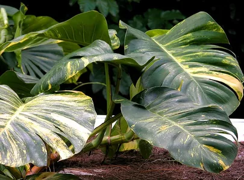
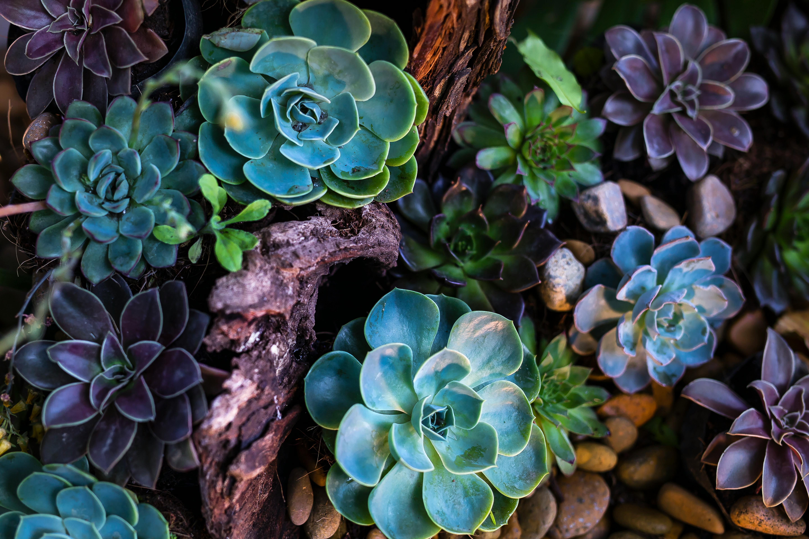
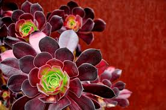
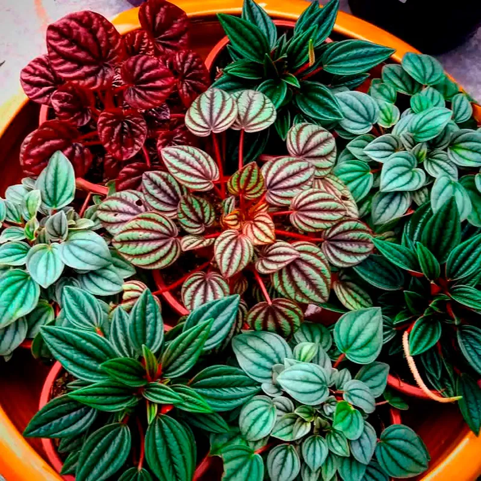
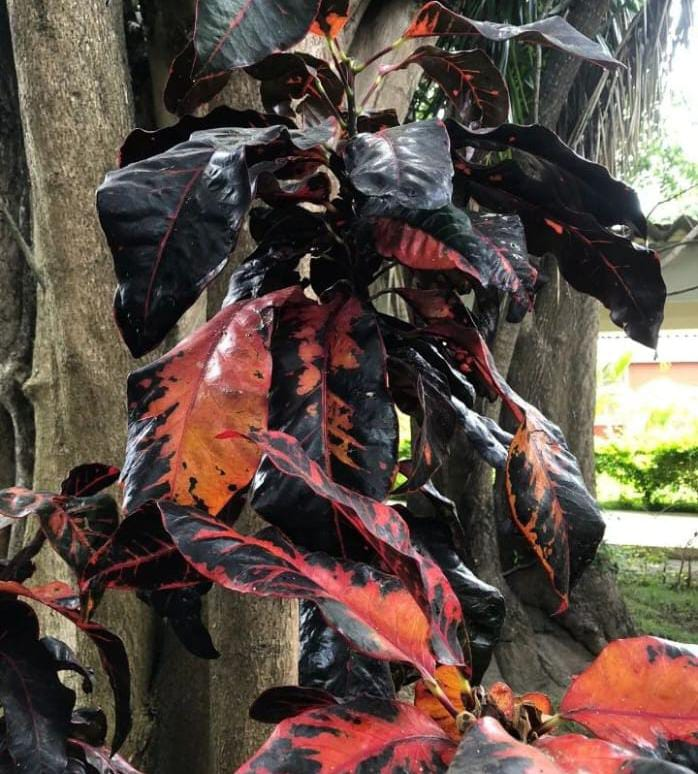
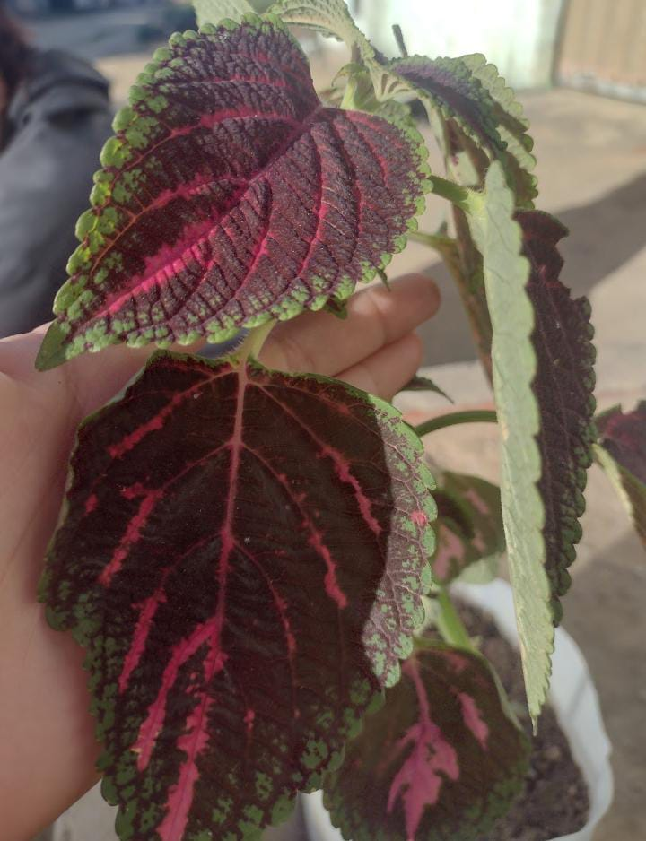
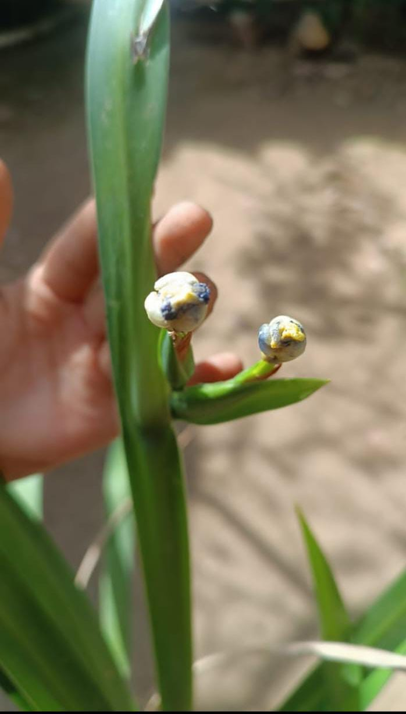
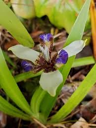

Cultivar plantas em ambientes urbanos
Em meio ao ritmo acelerado da vida urbana, muitas vezes nos desconectamos da natureza. No entanto, trazer o verde para dentro de casa pode transformar nosso ambiente e bem-estar. Cultivar plantas em apartamentos não é apenas uma tendência estética, mas uma prática que oferece benefícios reais para a saúde física e mental.
Estudos científicos demonstram que a presença de plantas internas pode reduzir níveis de estresse e ansiedade, melhorar a qualidade do ar e até aumentar a produtividade e a concentração. Além disso, o cuidado com as plantas proporciona momentos de pausa e conexão com o presente, essenciais para o equilíbrio emocional.
Mesmo em espaços pequenos, é possível criar um ambiente verde e acolhedor. Com escolhas adequadas de plantas e cuidados simples, qualquer canto pode florescer.
Plantas ideais para apartamentos e espaços pequenos
-
Espada-de-São-Jorge / Sansevieria trifasciata

Resistente e quase indestrutível, a Espada-de-São-Jorge purifica o ar e ocupa pouco espaço. Ideal para iniciantes e apartamentos pequenos.
-
Jibóia / Epipremnum aureum

Trepa bem em vasos suspensos ou prateleiras. Fácil de cuidar e ótima para adicionar um toque verde sem ocupar muito espaço.
-
Suculentas


Pequenas e resistentes, armazenam água nas folhas e decoram janelas, estantes ou mesas, exigindo pouco cuidado.
-
Peperômia / Peperomia spp.

Compacta, com folhas ornamentais, cresce bem em vasos pequenos e exige luz moderada, perfeita para apartamentos.
-
Cróton / Codiaeum variegatum

Com folhas coloridas e vibrantes, precisa de luz indireta abundante e transforma qualquer espaço em um jardim urbano.
-
Coleus / Solenostemon scutellarioides

Folhagem impressionante e colorida, cresce bem em vasos internos e adiciona personalidade a qualquer canto do apartamento.
- Neomarica northiana


Planta perene com folhas verdes e arqueadas, produz flores delicadas e elegantes que lembram íris. Ideal para cultivar em vasos ou canteiros internos, precisa de luz indireta e regas regulares, sem encharcar o solo.
Dicas de cuidado e manutenção
Para manter suas plantas saudáveis mesmo em espaços pequenos, siga algumas rotinas simples:
- Rega: Observe o solo; a maioria das plantas não gosta de água em excesso.
- Luz: Ajuste a posição das plantas conforme a necessidade de luz direta ou indireta.
- Adubação: Use fertilizantes naturais ou específicos para cada tipo de planta.
- Poda: Remova folhas secas e estimule o crescimento saudável.
- Controle de pragas: Verifique folhas regularmente e use soluções naturais se necessário.
Benefícios de cultivar plantas em apartamentos
Além de decorar, as plantas trazem benefícios reais para quem vive em espaços urbanos:
- Bem-estar mental: Reduzem o estresse, a ansiedade e ajudam na concentração.
- Saúde física: Melhoram a qualidade do ar, aumentam a umidade e proporcionam sensação de frescor.
- Conexão com a natureza: Pequenos momentos de cuidado ajudam a desacelerar e se reconectar com o presente.
Com pequenas escolhas e cuidados, é possível transformar qualquer apartamento em um verdadeiro refúgio verde.